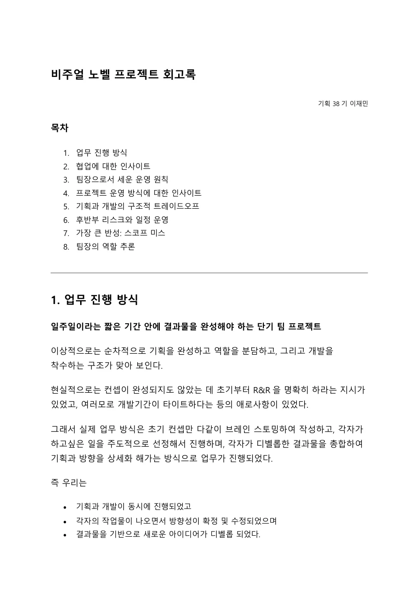
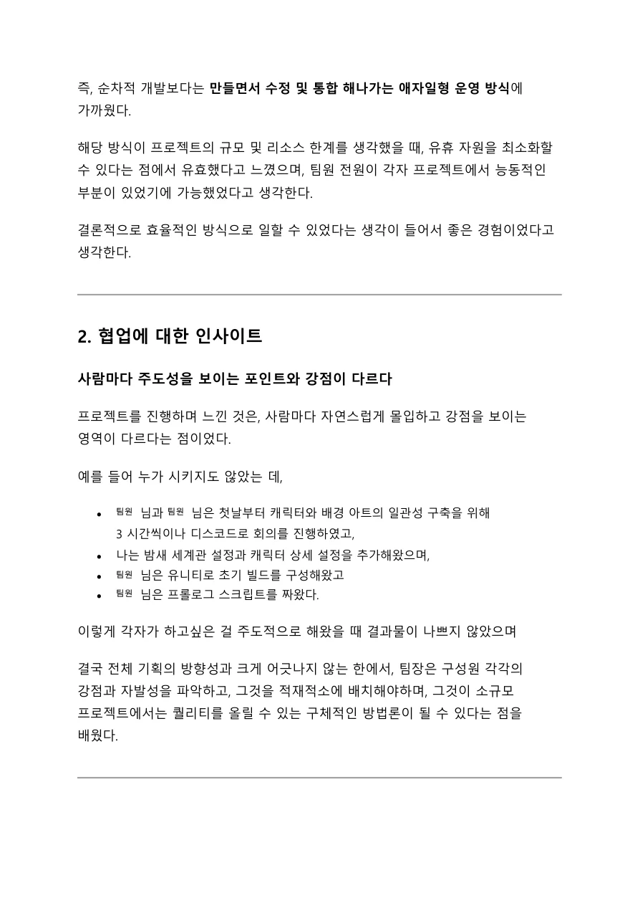
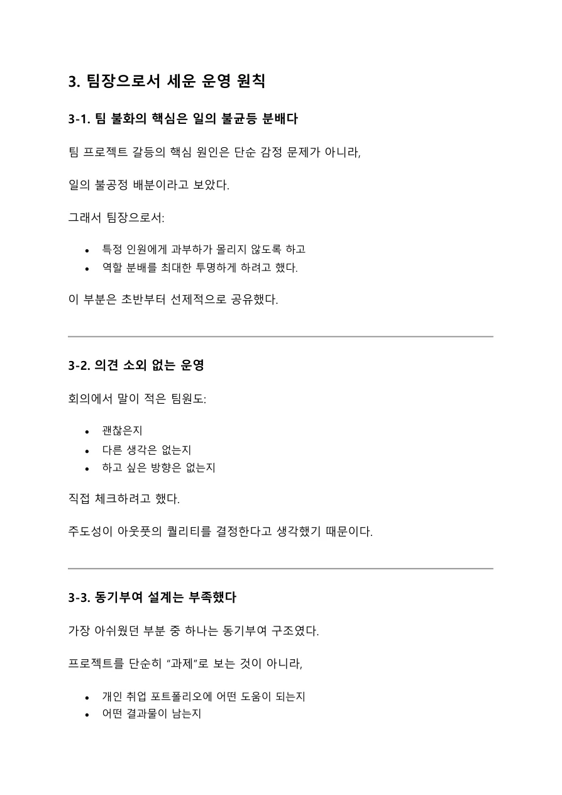
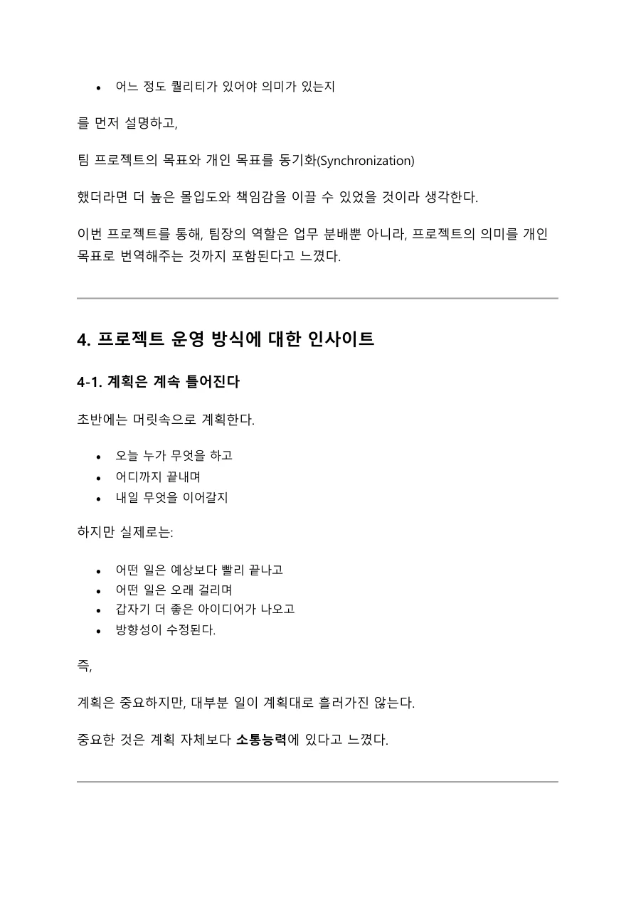
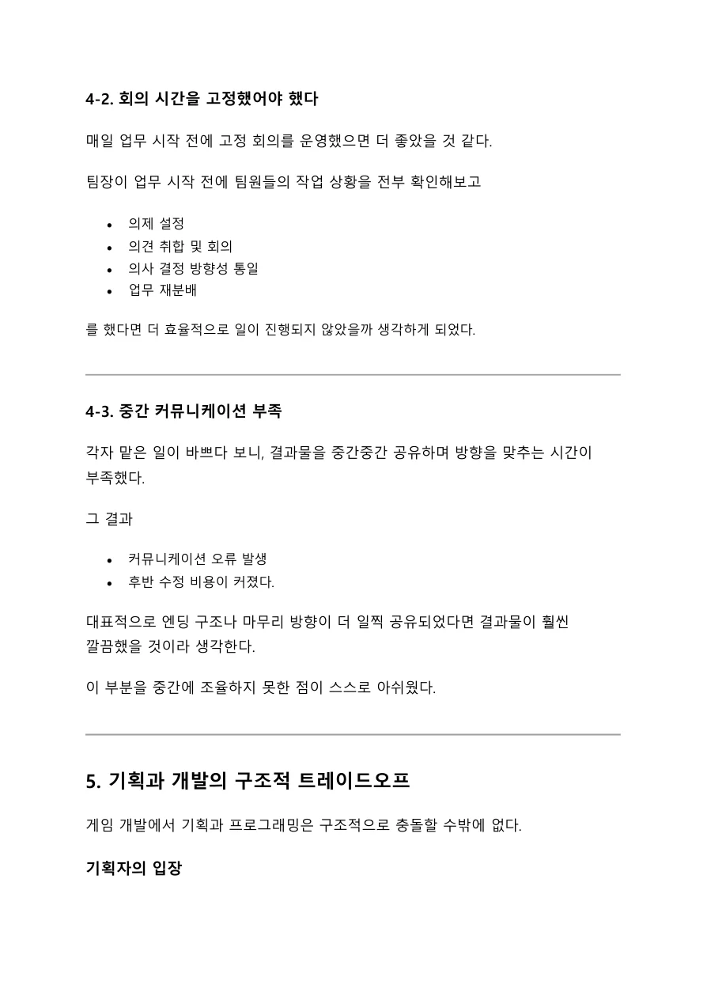
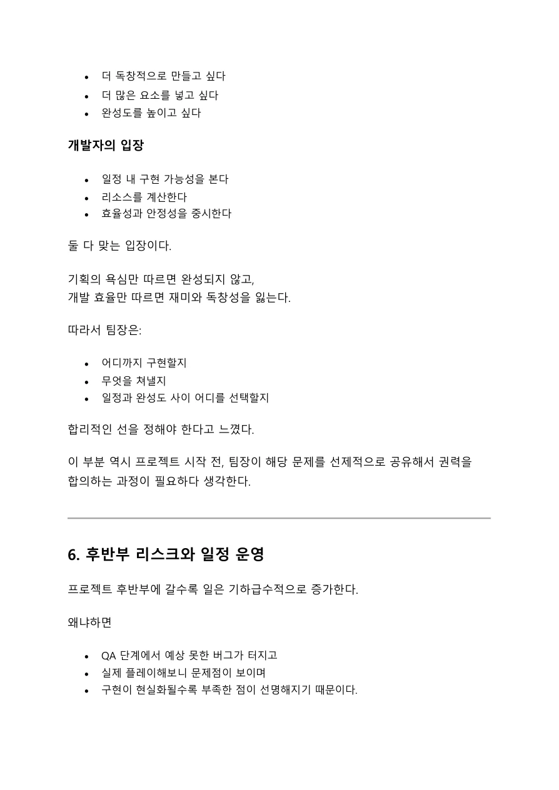
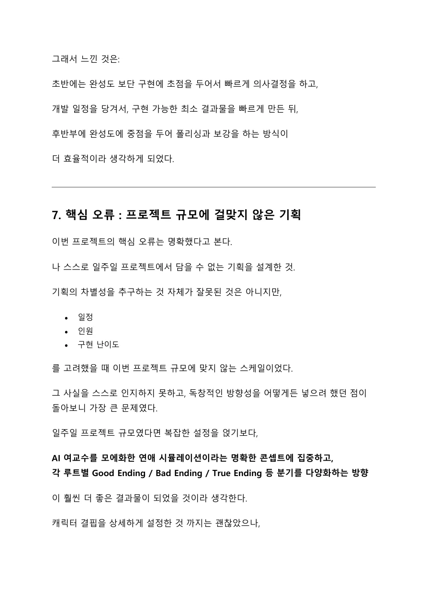
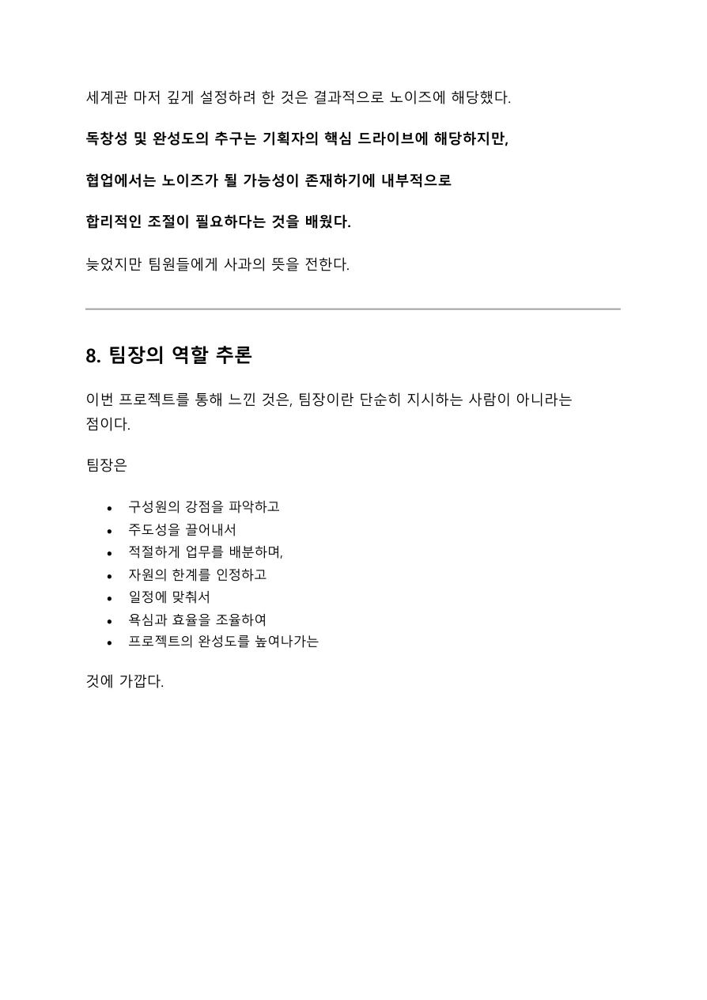

1 / 8쪽

이 쪽을 텍스트로 읽기
비주얼 노벨 프로젝트 회고록
기획 38 기 이재민
목차
1. 업무 진행 방식
2. 협업에 대한 인사이트
3. 팀장으로서 세운 운영 원칙
4. 프로젝트 운영 방식에 대한 인사이트
5. 기획과 개발의 구조적 트레이드오프
6. 후반부 리스크와 일정 운영
7. 가장 큰 반성: 스코프 미스
8. 팀장의 역할 추론
1. 업무 진행 방식
일주일이라는 짧은 기간 안에 결과물을 완성해야 하는 단기 팀 프로젝트
이상적으로는 순차적으로 기획을 완성하고 역할을 분담하고, 그리고 개발을
착수하는 구조가 맞아 보인다.
현실적으로는 컨셉이 완성되지도 않았는 데 초기부터 R&R 을 명확히 하라는 지시가
있었고, 여러모로 개발기간이 타이트하다는 등의 애로사항이 있었다.
그래서 실제 업무 방식은 초기 컨셉만 다같이 브레인 스토밍하여 작성하고, 각자가
하고싶은 일을 주도적으로 선정해서 진행하며, 각자가 디벨롭한 결과물을 총합하여
기획과 방향을 상세화 해가는 방식으로 업무가 진행되었다.
즉 우리는
기획과 개발이 동시에 진행되었고
각자의 작업물이 나오면서 방향성이 확정 및 수정되었으며
결과물을 기반으로 새로운 아이디어가 디벨롭 되었다.
2 / 8쪽

이 쪽을 텍스트로 읽기
즉, 순차적 개발보다는 만들면서 수정 및 통합 해나가는 애자일형 운영 방식에
가까웠다.
해당 방식이 프로젝트의 규모 및 리소스 한계를 생각했을 때, 유휴 자원을 최소화할
수 있다는 점에서 유효했다고 느꼈으며, 팀원 전원이 각자 프로젝트에서 능동적인
부분이 있었기에 가능했었다고 생각한다.
결론적으로 효율적인 방식으로 일할 수 있었다는 생각이 들어서 좋은 경험이었다고
생각한다.
2. 협업에 대한 인사이트
사람마다 주도성을 보이는 포인트와 강점이 다르다
프로젝트를 진행하며 느낀 것은, 사람마다 자연스럽게 몰입하고 강점을 보이는
영역이 다르다는 점이었다.
예를 들어 누가 시키지도 않았는 데,
팀원님과 팀원님은 첫날부터 캐릭터와 배경 아트의 일관성 구축을 위해
3 시간씩이나 디스코드로 회의를 진행하였고,
나는 밤새 세계관 설정과 캐릭터 상세 설정을 추가해왔으며,
팀원님은 유니티로 초기 빌드를 구성해왔고
팀원님은 프롤로그 스크립트를 짜왔다.
이렇게 각자가 하고싶은 걸 주도적으로 해왔을 때 결과물이 나쁘지 않았으며
결국 전체 기획의 방향성과 크게 어긋나지 않는 한에서, 팀장은 구성원 각각의
강점과 자발성을 파악하고, 그것을 적재적소에 배치해야하며, 그것이 소규모
프로젝트에서는 퀄리티를 올릴 수 있는 구체적인 방법론이 될 수 있다는 점을
배웠다.
3 / 8쪽

이 쪽을 텍스트로 읽기
3. 팀장으로서 세운 운영 원칙
3-1. 팀 불화의 핵심은 일의 불균등 분배다
팀 프로젝트 갈등의 핵심 원인은 단순 감정 문제가 아니라,
일의 불공정 배분이라고 보았다.
그래서 팀장으로서:
특정 인원에게 과부하가 몰리지 않도록 하고
역할 분배를 최대한 투명하게 하려고 했다.
이 부분은 초반부터 선제적으로 공유했다.
3-2. 의견 소외 없는 운영
회의에서 말이 적은 팀원도:
괜찮은지
다른 생각은 없는지
하고 싶은 방향은 없는지
직접 체크하려고 했다.
주도성이 아웃풋의 퀄리티를 결정한다고 생각했기 때문이다.
3-3. 동기부여 설계는 부족했다
가장 아쉬웠던 부분 중 하나는 동기부여 구조였다.
프로젝트를 단순히 “과제”로 보는 것이 아니라,
개인 취업 포트폴리오에 어떤 도움이 되는지
어떤 결과물이 남는지
4 / 8쪽

이 쪽을 텍스트로 읽기
어느 정도 퀄리티가 있어야 의미가 있는지
를 먼저 설명하고,
팀 프로젝트의 목표와 개인 목표를 동기화(Synchronization)
했더라면 더 높은 몰입도와 책임감을 이끌 수 있었을 것이라 생각한다.
이번 프로젝트를 통해, 팀장의 역할은 업무 분배뿐 아니라, 프로젝트의 의미를 개인
목표로 번역해주는 것까지 포함된다고 느꼈다.
4. 프로젝트 운영 방식에 대한 인사이트
4-1. 계획은 계속 틀어진다
초반에는 머릿속으로 계획한다.
오늘 누가 무엇을 하고
어디까지 끝내며
내일 무엇을 이어갈지
하지만 실제로는:
어떤 일은 예상보다 빨리 끝나고
어떤 일은 오래 걸리며
갑자기 더 좋은 아이디어가 나오고
방향성이 수정된다.
즉,
계획은 중요하지만, 대부분 일이 계획대로 흘러가진 않는다.
중요한 것은 계획 자체보다 소통능력에 있다고 느꼈다.
5 / 8쪽

이 쪽을 텍스트로 읽기
4-2. 회의 시간을 고정했어야 했다
매일 업무 시작 전에 고정 회의를 운영했으면 더 좋았을 것 같다.
팀장이 업무 시작 전에 팀원들의 작업 상황을 전부 확인해보고
의제 설정
의견 취합 및 회의
의사 결정 방향성 통일
업무 재분배
를 했다면 더 효율적으로 일이 진행되지 않았을까 생각하게 되었다.
4-3. 중간 커뮤니케이션 부족
각자 맡은 일이 바쁘다 보니, 결과물을 중간중간 공유하며 방향을 맞추는 시간이
부족했다.
그 결과
커뮤니케이션 오류 발생
후반 수정 비용이 커졌다.
대표적으로 엔딩 구조나 마무리 방향이 더 일찍 공유되었다면 결과물이 훨씬
깔끔했을 것이라 생각한다.
이 부분을 중간에 조율하지 못한 점이 스스로 아쉬웠다.
5. 기획과 개발의 구조적 트레이드오프
게임 개발에서 기획과 프로그래밍은 구조적으로 충돌할 수밖에 없다.
기획자의 입장
6 / 8쪽

이 쪽을 텍스트로 읽기
더 독창적으로 만들고 싶다
더 많은 요소를 넣고 싶다
완성도를 높이고 싶다
개발자의 입장
일정 내 구현 가능성을 본다
리소스를 계산한다
효율성과 안정성을 중시한다
둘 다 맞는 입장이다.
기획의 욕심만 따르면 완성되지 않고,
개발 효율만 따르면 재미와 독창성을 잃는다.
따라서 팀장은:
어디까지 구현할지
무엇을 쳐낼지
일정과 완성도 사이 어디를 선택할지
합리적인 선을 정해야 한다고 느꼈다.
이 부분 역시 프로젝트 시작 전, 팀장이 해당 문제를 선제적으로 공유해서 권력을
합의하는 과정이 필요하다 생각한다.
6. 후반부 리스크와 일정 운영
프로젝트 후반부에 갈수록 일은 기하급수적으로 증가한다.
왜냐하면
QA 단계에서 예상 못한 버그가 터지고
실제 플레이해보니 문제점이 보이며
구현이 현실화될수록 부족한 점이 선명해지기 때문이다.
7 / 8쪽

이 쪽을 텍스트로 읽기
그래서 느낀 것은:
초반에는 완성도 보단 구현에 초점을 두어서 빠르게 의사결정을 하고,
개발 일정을 당겨서, 구현 가능한 최소 결과물을 빠르게 만든 뒤,
후반부에 완성도에 중점을 두어 폴리싱과 보강을 하는 방식이
더 효율적이라 생각하게 되었다.
7. 핵심 오류 : 프로젝트 규모에 걸맞지 않은 기획
이번 프로젝트의 핵심 오류는 명확했다고 본다.
나 스스로 일주일 프로젝트에서 담을 수 없는 기획을 설계한 것.
기획의 차별성을 추구하는 것 자체가 잘못된 것은 아니지만,
일정
인원
구현 난이도
를 고려했을 때 이번 프로젝트 규모에 맞지 않는 스케일이었다.
그 사실을 스스로 인지하지 못하고, 독창적인 방향성을 어떻게든 넣으려 했던 점이
돌아보니 가장 큰 문제였다.
일주일 프로젝트 규모였다면 복잡한 설정을 얹기보다,
AI 여교수를 모에화한 연애 시뮬레이션이라는 명확한 콘셉트에 집중하고,
각 루트별 Good Ending / Bad Ending / True Ending 등 분기를 다양화하는 방향
이 훨씬 더 좋은 결과물이 되었을 것이라 생각한다.
캐릭터 결핍을 상세하게 설정한 것 까지는 괜찮았으나,
8 / 8쪽

이 쪽을 텍스트로 읽기
세계관 마저 깊게 설정하려 한 것은 결과적으로 노이즈에 해당했다.
독창성 및 완성도의 추구는 기획자의 핵심 드라이브에 해당하지만,
협업에서는 노이즈가 될 가능성이 존재하기에 내부적으로
합리적인 조절이 필요하다는 것을 배웠다.
늦었지만 팀원들에게 사과의 뜻을 전한다.
8. 팀장의 역할 추론
이번 프로젝트를 통해 느낀 것은, 팀장이란 단순히 지시하는 사람이 아니라는
점이다.
팀장은
구성원의 강점을 파악하고
주도성을 끌어내서
적절하게 업무를 배분하며,
자원의 한계를 인정하고
일정에 맞춰서
욕심과 효율을 조율하여
프로젝트의 완성도를 높여나가는
것에 가깝다.